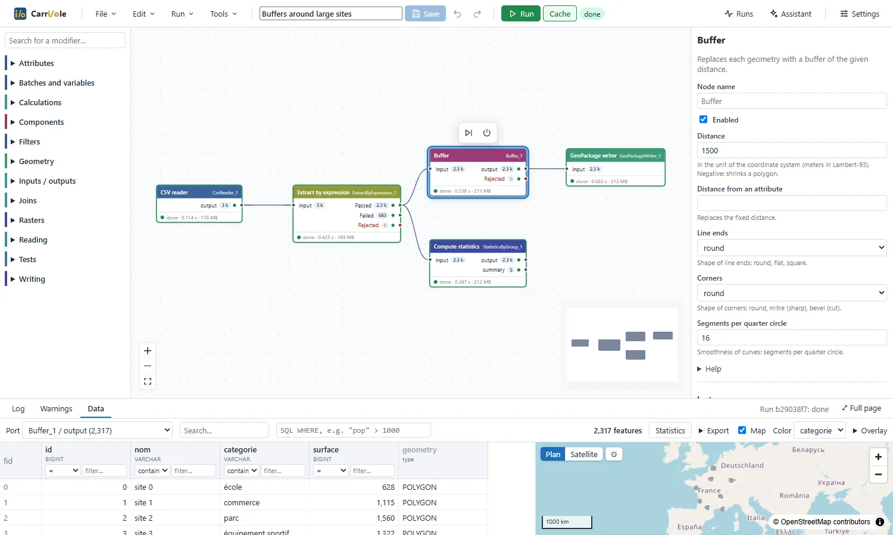
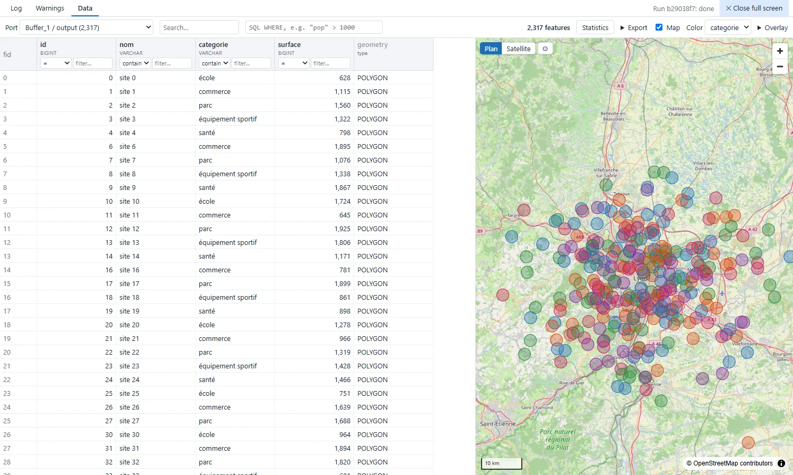

Carriole
Desktop ETL for geographic data. Flows are built in a visual editor from modifiers written in Python, and every intermediate result can be checked on a table and a map.
Windows and Linux. Free software under the MIT license.

What it does
- Reads and writes PostgreSQL/PostGIS, Oracle, SQLite/SpatiaLite, GeoPackage, Shapefile, MapInfo, GeoJSON, GeoParquet, FlatGeobuf, CSV (WKT or X/Y) and Excel. Rasters: GeoTIFF, COG, JPEG 2000, NetCDF, STAC catalogs.
- 104 modifiers: attributes, filters, joins, statistics, geometry (buffer, clip, dissolve, spatial joins, reprojection, validation…) and rasters. Catalogue.
- The output of each port can be opened on a filterable table and a map, computed with DuckDB Spatial, including on millions of features.
- Runs in the background, with a cache: on the next run, only the nodes that changed are recomputed. Runs can be scheduled.
- Flows are JSON files, stored wherever the team wants. Reusable components are shared through a folder.
- Optional AI assistant (Claude, OpenAI, OpenRouter, Ollama), which proposes changes to the flow; what it may read is configurable.
- Runs on the user's computer, with their own file permissions, without a server. Internet is only used for basemaps and the assistant. Interface in English and French.

Download
| Windows 10 / 11 |
Carriole-Setup.exe Installer for all users of the computer. It is not code-signed: on the SmartScreen warning, choose “More info”, then “Run anyway”. |
|---|---|
| Linux x64 |
Carriole.AppImage Make the file executable ( chmod +x) and run it. No installation or admin rights needed.
|
Python, GDAL, DuckDB and the projection grids are included. All versions and checksums.
Writing a modifier
A modifier is one Python class in one file. Its parameters become a form in the editor. The file is placed in the plugins folder; no rebuild is needed.
class SurfaceCalculator(Modifier):
name = "SurfaceCalculator"
label = "Surface area"
category = "Geometry"
class Params(Params):
attribute: str = "surface"
unit: Literal["m2", "ha"] = "m2"
def process(self, batch):
area = shapely.area(geometries(batch))
if self.params.unit == "ha":
area = area / 10_000
return {"output": batch.append_column(
self.params.attribute, pa.array(area))}Libraries used
- Data
- DuckDB (Spatial), Apache Arrow, GDAL (pyogrio, Rasterio), Shapely / GEOS, PROJ / pyproj, NumPy
- Databases
- psycopg, python-oracledb, SQLite, SQLAlchemy
- Backend
- FastAPI, Uvicorn, Pydantic, Typer
- Interface
- React, React Flow, MapLibre GL JS, CodeMirror, TanStack Virtual, i18next, Zustand, Vite
- Desktop application
- Electron, electron-builder, uv, python-build-standalone
- Maps and data
- OpenStreetMap contributors, IGN transformation grids